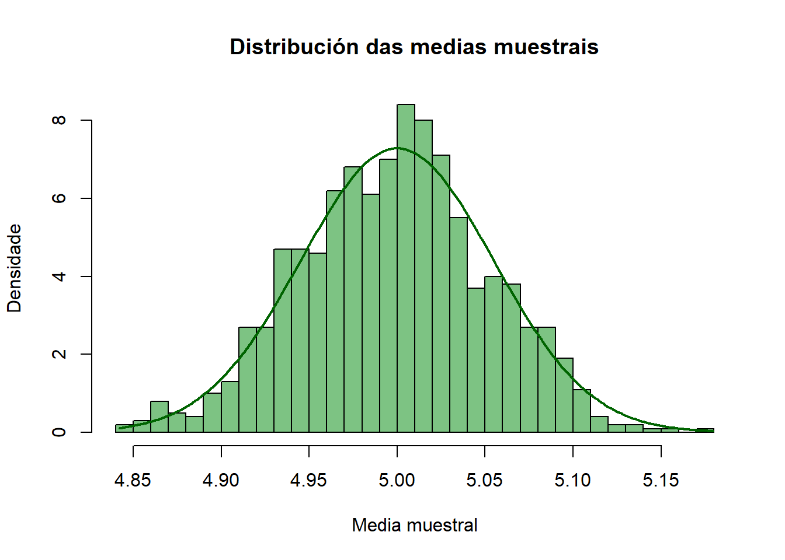
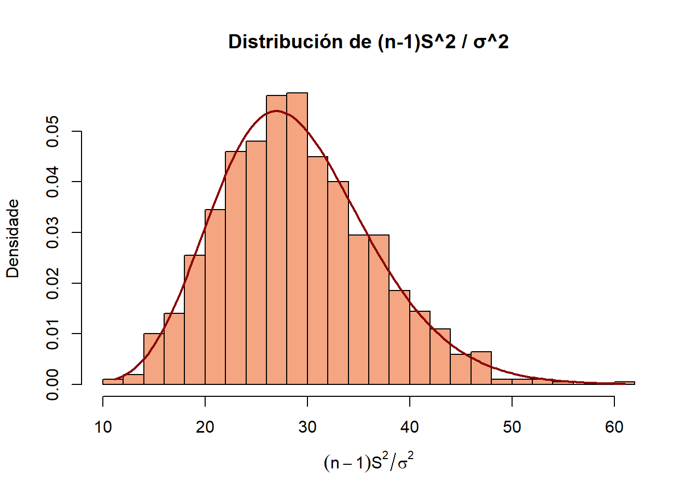
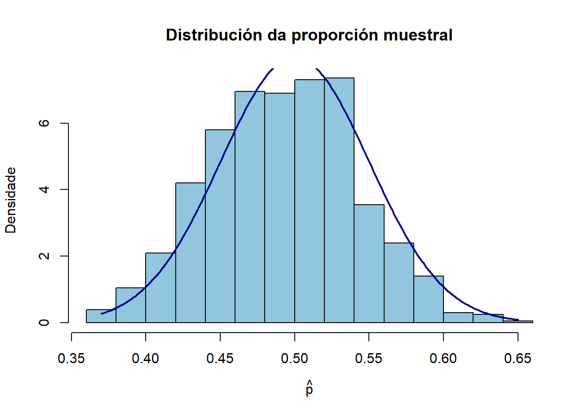

4Introdución á inferencia estatística e á estimación de parámetros
Nesta práctica aplicaremos os conceptos de inferencia estatística estudados na teoría utilizando o entorno de programación R. O obxectivo é que poidamos estimar parámetros e construír intervalos de confianza a partir de mostras, así como interpretar os resultados de forma práctica.
Traballaremos con datos simulados ou recollidos de exemplos reais. Ao longo destas prácticas, aprenderemos a:
Calcular estadísticos de mostra (media, varianza, proporcións).
Construír intervalos de confianza para diferentes tipos de parámetros (medias, diferenzas de medias, proporcións, varianzas).
Interpretar os resultados no contexto da poboación de interese, conectando así a teoría coa práctica.
4.1 Estimación puntual
Sexa \(X_1, X_2, \ldots, X_n\) unha m.a.s dunha poboación. Sexa \(\theta\) un parámetro de interese desa poboación. Un estimador puntual (estimador) de \(\theta\) é un estatístico \(\hat{\theta}\equiv T(X_1, X_2, \ldots, X_n)\) cuxa función é aproximar o valor de \(\theta\). Lembramos que un estatístico é unha variable aleatoria e, por iso, terá unha certa distribución.
4.1.1 Estimación puntual da media e a varianza
Consideremos unha mostra aleatoria simple \(X_1, \ldots, X_n\) de tamaño \(n\) dunha poboación con media \(\mu\) e desviación típica \(\sigma\). O problema consiste en estimar os parámetros \(\mu\) (media poboacional) e \(\sigma\) (desviación típica poboacional).
Estimación puntual da media
Xa comentamos que como estimador natural para a media poboacional, \(\mu\) empregaremos media muestral:
\[
\bar{X} = \frac{X_1 + \cdots + X_n}{n}.
\]
Sabemos que \(\mathbb{E}(\bar{X}) = \mu\), polo que é un estimador insesgado da media.
TipDistribución do estatístico
Se \(X_1, \dots, X_n\) son variables aleatorias independentes e distribuídas segundo \(N(\mu, \sigma)\), entón a media muestral é exactamente normal \(\bar{X} \sim N\left(\mu, \frac{\sigma}{\sqrt{n}}\right)\) e podemos facer inferencias exactas mesmo con mostras pequenas. Se \(X_1, \dots, X_n\) non son necesariamente normais, polo Teorema Central do Límite , para \(n\) grande, a media muestral aproxímase a unha normal \(\bar{X} \xrightarrow[n \to \infty]{} N\left(\mu, \frac{\sigma}{\sqrt{n}}\right)\).
Imos facer unha simulación para entender a distribución da media muestral co seguinte exemplo. Unha plataforma de comercio eletrónico quere estudar o tempo medio de resposta (en ms) do seu sistema de recomendación. Supoñamos que o tempo de resposta segue unha distribución normal con media \(\mu = 5\) ms e desviación típica \(\sigma = 0.3\) ms. O obxectivo é entender como varía a media muestral cando tomamos distintas mostras do mesmo tamaño. A continuación:
Simulamos 1000 mostras de tamaño \(n=30\) cada unha, extraídas dunha poboación normal con media \(\mu = 5\) e desviación típica \(\sigma = 0.3\).
Calculamos a media muestral de cada mostra.
Facemos un histograma das 1000 medias muestrais.
Engadimos a curva teórica da distribución da media muestral \(\bar{X} \sim N\left(\mu, \frac{\sigma}{\sqrt{n}}\right)\)
Observamos como se concentra a distribución de \(\bar{X}\) arredor de \(\mu\) e comparamos o histograma dos datos simulados coa curva teórica. Observa, cambiando o tamaño da mostra \(n\), como se ve afectada a dispersión da media muestral \(\bar{X}\).
# Parámetros da poboaciónmu <-5sigma <-0.3n <-30# tamaño da mostraB <-1000# número de mostras# Simulación das medias muestraismedias <-numeric(B)set.seed(123) # para reproducibilidadefor (i in1:B) { mostra <-rnorm(n, mean = mu, sd = sigma) medias[i] <-mean(mostra)}# Histograma das medias muestraishist(medias,freq =FALSE, col ="#7DC383", border ="black",main ="Distribución das medias muestrais",xlab ="Media muestral", ylab ="Densidade", breaks =30)# Engadir curva teórica da media muestralx_vals <-seq(min(medias), max(medias), length =200)y_vals <-dnorm(x_vals, mean = mu, sd = sigma /sqrt(n))lines(x_vals, y_vals, col ="darkgreen", lwd =2)

Empregando a distribución do estatístico podemos resolver cuestións como a seguinte: Sexa \(X\) unha variable aleatoria normal con media \(\mu = 50\) e desviación típica \(\sigma = 10\). Calcula a probabilidade de que a media \(\bar{X}\) dunha m.a.s de tamaño \(n = 25\) difira da media poboacional \(\mu\) menos de 2 unidades.
# Parámetrosmu <-50sigma <-10n <-25delta <-2# Diferencia da mediase <- sigma /sqrt(n) # Erro estándar da media# Probabilidade de que |Xbar - mu| < deltapnorm(mu + delta, mean = mu, sd = se) -pnorm(mu - delta, mean = mu, sd = se)## [1] 0.6826895
Estimación puntual da varianza
Como estimador para a varianza poblacional \(\sigma^2\) empregaremos:
tamén chamada cuasivarianza muestral. Definida desta maneira, \(S^2\) cumpre que \(\mathbb{E}(S^2) = \sigma^2\), polo que é un estimador insesgado de \(\sigma^2\).
TipDistribución do estatístico
Se \(X_1, \dots, X_n\) son variables aleatorias independentes e distribuídas segundo \(N(\mu, \sigma)\), entón
É dicir, a cuasivarianza muestral (debidamente escalada) segue unha distribución chi cadrado con \(n-1\) graos de liberdade. Se a poboación non é normal, esta distribución xa non é válida exactamente, polo que as inferencias sobre a varianza baséanse nesta hipótese.
Imos facer unha simulación para entender a distribución da cuasivarianza muestral co mesmo exemplo que no caso da media. Unha plataforma de comercio eletrónico quere estudar a varianza do tempo de resposta (en ms) do seu sistema de recomendación. Supoñamos que o tempo de resposta segue unha distribución normal con media \(\mu = 5\) ms e desviación típica \(\sigma = 0.3\) ms. O obxectivo é entender como varía a cuasivarianza muestral cando tomamos distintas mostras do mesmo tamaño. A continuación:
Simulamos 1000 mostras de tamaño \(n=30\) cada unha, extraídas dunha poboación normal con media \(\mu = 5\) e desviación típica \(\sigma = 0.3\).
Calculamos a cuasivarianza muestral \(S^2\) de cada mostra.
Facemos un histograma dos 1000 valores de \(\frac{(n-1)S^2}{\sigma^2} \sim \chi^2_{n-1}.\)
Engadimos a curva teórica da distribución de \(\frac{(n-1)S^2}{\sigma^2} \sim \chi^2_{n-1}.\)
# Parámetros da poboaciónmu <-5sigma <-0.3n <-30# tamaño da mostraB <-1000# número de mostras# Simulación das varianzas muestraisvarianzas <-numeric(B)set.seed(123)for (i in1:B) { mostra <-rnorm(n, mean = mu, sd = sigma) varianzas[i] <-var(mostra) # xa usa n-1}# Transformación ao estatístico chi cadradochi_vals <- (n -1) * varianzas / sigma^2# Histogramahist(chi_vals,freq =FALSE, col ="#f4a582", border ="black",main ="Distribución de (n-1)S^2 / σ^2",xlab =expression((n -1) * S^2/ sigma^2),ylab ="Densidade", breaks =30)# Curva teórica chi cadradox_vals <-seq(min(chi_vals), max(chi_vals), length =200)y_vals <-dchisq(x_vals, df = n -1)lines(x_vals, y_vals, col ="darkred", lwd =2)

4.1.2 Estimación puntual dunha proporción
Consideremos agora o problema de estimar a proporción de individuos dunha poboación que presentan unha certa característica, a partir dunha mostra aleatoria simple. Para iso, definimos a variable aleatoria
\[
X=\begin{cases}
1, & \text{se o individuo presenta a característica de interese} \\
0, & \text{se o individuo non presenta a característica de interese.}
\end{cases}
\]
Observa que así definida, \(X\) ten distribución Bernoulli(\(p\)), onde o parámetro \(p\) é precisamente a proporción (descoñecida) de individuos coa característica na poboación.
A mostra está formada por \(n\) variables \(X_1,\ldots,X_n\) independentes e coa mesma distribución que \(X\). O estimador razoable para \(p\) é a proporción muestral:
\[
\hat p = \frac{\text{número de individuos coa característica na mostra}}{n} = \frac{X_1 + \cdots + X_n}{n}.
\]
Observamos que \(\mathbb{E}(\hat p) = p\), polo que \(\hat p\) é insesgado para \(p\).
TipDistribución do estatístico
Polo TCL, para \(n\) grande, \(\hat p\) é aproximadamente normal con media \(p\) e varianza \(p(1-p)/n\). É dicir,
\[
\hat p \xrightarrow[n \to \infty]{} N\left(p,\sqrt{\frac{p(1-p)}{n}}\right).
\]
Imos facer unha simulación para entender a distribución da proporción muestral cun exemplo sinxelo. Supoñamos que lanzamos unha moeda equilibrada, onde a probabilidade de obter cara é \(p = 0.5\). O obxectivo é entender como varía a proporción muestral cando tomamos distintas mostras do mesmo tamaño. A continuación:
Simulamos 1000 mostras de tamaño \(n=100\) cada unha, onde cada observación é unha variable Bernoulli con probabilidade \(p = 0.5\).
Calculamos a proporción muestral \(\hat{p}\) en cada mostra.
Facemos un histograma das 1000 proporcións mostrais.
Engadimos a aproximación teórica normal \(\hat{p} \sim N\left(p, \sqrt{\frac{p(1-p)}{n}}\right)\).
Observamos como se concentra a distribución de \(\hat{p}\) arredor de \(p\) e comparamos o histograma dos datos simulados coa curva teórica. Observa, cambiando o tamaño da mostra \(n\), como se reduce a variabilidade da proporción muestral.
# Parámetrosp <-0.5n <-100B <-1000# Simulación das proporcións mostraisprop <-numeric(B)set.seed(123)for (i in1:B) { mostra <-rbinom(n, size =1, prob = p) prop[i] <-mean(mostra)}# Histogramahist(prop,freq =FALSE, col ="#92c5de", border ="black",main ="Distribución da proporción muestral",xlab =expression(hat(p)), ylab ="Densidade", breaks =20)# Curva normal teórica (aproximación)x_vals <-seq(min(prop), max(prop), length =200)y_vals <-dnorm(x_vals, mean = p, sd =sqrt(p * (1- p) / n))lines(x_vals, y_vals, col ="darkblue", lwd =2)

4.2 Intervalos de confianza
Un intervalo de confianza é un intervalo construído a partir da mostra e, por tanto, aleatorio, que contén ao parámetro cunha certa probabilidade, chamada nivel de confianza. Formalmente, un intervalo de confianza para un parámetro descoñecido \(\theta\) con nivel de confianza \(1-\alpha\), \(\alpha \in [0,1]\) é un intervalo de extremos aleatorios \(L_1\equiv L_1(X_1,\ldots,X_n)\) e \(L_2\equiv L_2(X_1,\ldots,X_n)\) que, con probabilidade \(1−\alpha\) conté ao parámetro, é dicir, \[
P(L_1 \leq \theta \leq L_2) = 1-\alpha.
\]
4.2.1 Intervalo de confianza para a media dunha poboación normal
Consideremos unha mostra aleatoria simple \(X_1,\dots,X_n\) de tamaño \(n\) procedente dunha poboación normal \(N(\mu,\sigma)\). O obxectivo é construír un intervalo de confianza para o parámetro \(\mu\), é dicir, para a media da poboación.
TipIC de nivel \(1-\alpha\) para \(\mu\) con \(\sigma^2\) coñecida
Como exemplo, supoñamos unha plataforma de comercio eletrónico que quere estimar o tempo medio de resposta (en ms) do seu sistema de recomendación. Para iso mídese o tempo de resposta en 10 usuarios:
Suponse que a variable é normal con desviación típica \(\sigma=0.3\). Calculamos un intervalo de confianza do 95% para o tempo medio de resposta.
x <-c(5.45, 4.44, 4.95, 5.57, 4.66, 5.58, 5.04, 4.9, 5.45, 4.61)sigma <-0.3n <-length(x)alpha <-0.05xbar <-mean(x)z_alpha2 <-qnorm(1- alpha/2)LI <- xbar - z_alpha2 * sigma/sqrt(n)LS <- xbar + z_alpha2 * sigma/sqrt(n)cat("O intervalo de confianza do 95% para a media é: [", LI, ",", LS, "]\n")## O intervalo de confianza do 95% para a media é: [ 4.879061 , 5.250939 ]
Un nivel de confianza do 95% por exemplo significa que, se repetimos o procedemento de construción do intervalo moitas veces, aproximadamente o 95% dos intervalos conterán o verdadeiro valor do parámetro. Para entender o significado do nivel de confianza, realizamos a seguinte simulación:
Xeramos \(B=1000\) mostras independentes dunha poboación normal con \(\mu=5\) e \(\sigma=0.3\)
Para cada mostra, construímos un intervalo de confianza do 95% para \(\mu\) (supoñendo \(\sigma\) coñecida)
Contamos cantos destes intervalos conteñen o verdadeiro valor \(\mu\).
O resultado que se obtén é unha proporción próxima a 0.95. En resumo, o 95% refírese á fiabilidade do método, non a un intervalo particular.
# Parámetros da poboaciónmu <-5sigma <-0.3# Outros parámetrosn <-30alpha <-0.05z_alpha2 <-qnorm(1- alpha/2)B <-1000set.seed(1234)conta <-0for (i in1:B) { mostra <-rnorm(n, mean = mu, sd = sigma) xbar <-mean(mostra) LI <- xbar - z_alpha2 * sigma/sqrt(n) LS <- xbar + z_alpha2 * sigma/sqrt(n)if (LI <= mu & mu <= LS) { conta <- conta +1 }}cat("Proporción de intervalos que conteñen μ:", conta/B, "\n")## Proporción de intervalos que conteñen μ: 0.955
TipIC de nivel \(1-\alpha\) para \(\mu\) con \(\sigma^2\) descoñecida
Como exemplo, volvamos ao exemplo dunha plataforma de comercio eletrónico na que quere estimar o tempo medio de resposta (en ms) do seu sistema de recomendación. Para iso mídese o tempo de resposta en 10 usuarios:
Suponse que a variable é normal, pero supoñemos agora que non coñecemos a desviación típica \(\sigma\). Calculamos un intervalo de confianza do 95% para o tempo medio de resposta.
x <-c(5.45, 4.44, 4.95, 5.57, 4.66, 5.58, 5.04, 4.9, 5.45, 4.61)n <-length(x)alpha <-0.05xbar <-mean(x)s <-sd(x)t_alpha2 <-qt(1- alpha/2, df = n -1)LI <- xbar - t_alpha2 * s/sqrt(n)LI## [1] 4.761551LS <- xbar + t_alpha2 * s/sqrt(n)LS## [1] 5.368449cat("O intervalo de confianza do 95% para a media é: [", LI, ",", LS, "]\n")## O intervalo de confianza do 95% para a media é: [ 4.761551 , 5.368449 ]t.test(x, conf.level =0.95)$conf.int## [1] 4.761551 5.368449## attr(,"conf.level")## [1] 0.95
Observa que en R, o cálculo de intervalos de confianza para a media con varianza descoñecida pódese facer directamente coa función t.test(), que implementa automaticamente o procedemento baseado na distribución \(t\) de Student.
4.2.2 Intervalo de confianza para a diferenza de medias de poboacións normais
Veremos agora como construír intervalos de confianza para comparar dúas medias, xa sexa de dúas poboacións diferentes ou de dúas medicións sobre os mesmos individuos dunha poboación. Segundo o tipo de datos dispoñibles, a comparación realízase con mostras independentes ou mostras emparelladas, nas que se obteñen dúas observacións relacionadas para cada individuo.
Mostras independentes, varianzas coñecidas
Supoñamos dúas poboacións nas que se estudan dúas características distribuídas normalmente con medias descoñecidas \(\mu_1\) e \(\mu_2\), respectivamente. Estamos interesados en construír un intervalo de confianza para a diferenza de medias \(\mu_1-\mu_2\) a partir de dúas mostras:
Unha mostra formada por \(n_1\) variables independentes e coa mesma distribución \(N(\mu_1, \sigma_1)\).
Unha mostra formada por \(n_2\) variables independentes e coa mesma distribución \(N(\mu_2, \sigma_2)\).
As mostras considéranse independentes, é dicir, os individuos da poboación 1 son distintos dos individuos da poboación 2. Supoñemos ademais que as varianzas \(\sigma_1^2\) e \(\sigma_2^2\) son coñecidas.
TipIC de nivel \(1-\alpha\) para \(\mu_1-\mu_2\) con \(\sigma_1^2\) e \(\sigma_2^2\) coñecidas
Supoñamos como exemplo unha plataforma de comercio electrónico que quere comparar o tempo medio de resposta do seu sistema en dous servidores distintos. Obsérvanse os tempos de 10 usuarios distintos en cada servidor:
Supoñendo que os tempos en cada servidos son normais con \(\sigma_1 = 0.3\) e \(\sigma_2 = 0.25\), calculamos un intervalo de confianza do 95% para a diferenza de tempos medios entre servidores.
Mostras independentes, varianzas descoñecidas e iguais
En moitas aplicacións, os valores de \(\sigma_1^2\) e \(\sigma_2^2\) son descoñecidos, pero podemos supoñer que son iguais. Consideremos dúas poboacións con características distribuídas normalmente con medias descoñecidas \(\mu_1\) e \(\mu_2\). Queremos construír un intervalo de confianza para \(\mu_1-\mu_2\) a partir de dúas mostras:
Unha mostra formada por \(n_1\) variables independentes e coa mesma distribución \(N(\mu_1, \sigma_1)\).
Unha mostra formada por \(n_2\) variables independentes e coa mesma distribución \(N(\mu_2, \sigma_2)\).
As mostras considéranse independentes e supoñemos que as varianzas son descoñecidas pero iguais.
TipIC de nivel \(1-\alpha\) para \(\mu_1-\mu_2\) con \(\sigma_1^2\) e \(\sigma_2^2\) descoñecidas (\(\sigma_1^2=\sigma_2^2\))
Recorda que, no intervalo anterior, \[
S_p^2 = \frac{(n_1-1)S_1^2 + (n_2-1)S_2^2}{n_1+n_2-2}.
\]
Como exemplo, supoñamos de novo unha plataforma de comercio electrónico que compara o tempo medio de resposta do seu sistema en dous servidores distintos. Obsérvanse os tempos de 10 usuarios distintos en cada servidor:
Supoñendo que os tempos son normais e as varianzas descoñecidas pero iguais, constrúe un intervalo de confianza do 95% para a diferenza de tempos medios entre servidores.
Como no caso do cálculo do intervalo de confianza para a media dunha poboación con varianza descoñecida, podemos empregar en R a función t.test(), que implementa automaticamente o procedemento baseado na distribución \(t\) de Student. Neste caso temos que dar como entrada os vectores que conteñen os datos das dúas mostras que queremos comparar e indicar con var.equal = TRUE que asumimos que as dúas poboacións teñen a mesma varianza.
Mostras independentes, varianzas descoñecidas e distintas
Consideremos agora dúas poboacións con características distribuídas normalmente con medias descoñecidas \(\mu_1\) e \(\mu_2\). Queremos construír un intervalo de confianza para \(\mu_1-\mu_2\) a partir de dúas mostras:
Unha mostra formada por \(n_1\) variables independentes e coa mesma distribución \(N(\mu_1, \sigma_1)\).
Unha mostra formada por \(n_2\) variables independentes e coa mesma distribución \(N(\mu_2, \sigma_2)\).
As mostras considéranse independentes e supoñemos que as varianzas son descoñecidas e diferentes. Agora non podemos ter unha estimación global da varianza como no caso anterior.
TipIC de nivel \(1-\alpha\) para \(\mu_1-\mu_2\) con \(\sigma_1^2\) e \(\sigma_2^2\) descoñecidas
O intervalo de confianza aproximado de nivel \(1-\alpha\) para a diferenza de medias \(\mu_1-\mu_2\) para \(n\) grande será: \[
\left(
(\bar X_1 - \bar X_2) - z_{\alpha/2} \sqrt{\frac{S_1^2}{n_1} + \frac{S_2^2}{n_2}}, \;\;
(\bar X_1 - \bar X_2) + z_{\alpha/2} \sqrt{\frac{S_1^2}{n_1} + \frac{S_2^2}{n_2}}
\right)
\] O IC pode ser pouco preciso para tamaños de mostra pequenos. Cando \(n_1\) ou \(n_2 < 30\), empréganse aproximacións (aproximación de Welch, que substitúe \(z_{\alpha/2}\) polo valor \(t_{\alpha/2}\) dunha distribución \(t\) de Student adecuada).
Volvamos entón ao exemplo da plataforma de comercio electrónico na que queremos comparar o tempo medio de resposta do seu sistema en dous servidores distintos. Obsérvanse os tempos de 10 usuarios distintos en cada servidor:
Supoñendo que os tempos son normais e as varianzas descoñecidas, calculamos un intervalo de confianza do 95% para a diferenza de tempos medios entre servidores (non asumimos nada en relación ás varianzas).
Observa que se calculamos o intervalo de confianza para a diferenza de medias usando a aproximación normal, o resultado non coincide exactamente co que obtemos coa función t.test() de R (indicamos agora var.equal = FALSE para sinalar que estamos no caso de varianzas descoñecidas e diferentes). A diferencia entre os intervalos calculados débese a que t.test() aplica a aproximación de Welch, que toma en conta os graos de liberdade efectivos e a estimación de cada varianza muestral. Polo tanto, t.test() proporciona un intervalo máis preciso cando as varianzas das dúas mostras son descoñecidas e potencialmente diferentes, polo que é recomendable empregalo en lugar da aproximación normal directa.
Mostras emparelladas
Consideremos agora unha poboación na que medimos dúas características relacionadas \(X_1\) e \(X_2\) sobre os mesmos individuos. Supoñemos que \(X_1 \sim N(\mu_1, \sigma_1)\) e \(X_2 \sim N(\mu_2, \sigma_2)\), pero tendo en conta que agora \(X_1\) e \(X_2\)non son independentes. Queremos construír un intervalo de confianza para a diferenza de medias \(\mu_1-\mu_2\). Na práctica, dispoñemos de dúas mostras emparelladas de tamaño \(n\) observadas nos mesmos individuos:
\(X_{11}, \dots, X_{1n}\) coa mesma distribución \(N(\mu_1, \sigma_1)\).
\(X_{21}, \dots, X_{2n}\) coa mesma distribución \(N(\mu_2, \sigma_2)\).
TipIC de nivel \(1-\alpha\) para \(\mu_1-\mu_2\). Mostras emparelladas
\[
\left(
\bar D - t_{n-1,\alpha/2} \frac{S_D}{\sqrt{n}}, \;\;
\bar D + t_{n-1\alpha/2} \frac{S_D}{\sqrt{n}}
\right)\]
No intervalo anterior \(\bar{D}\) e \(S_D\) refírese, respectivamente, á media e desviación tipica de \(D_i = X_{1i} - X_{2i}, \quad i=1,\dots,n\).
Como exemplo, un equipo de IA quere avaliar o impacto dunha nova técnica de preprocesamento sobre o tempo de adestramento dun modelo de clasificación de imaxes. Para iso, obtéñense os tempos de adestramento do modelo (en segundos) para 10 imaxes antes e despois de aplicar a técnica.
Antes do preprocesamento: \(82, 85, 78, 90, 88, 84, 87, 80, 86, 83\)
Despois do preprocesamento: \(85, 88, 80, 92, 90, 86, 89, 82, 88, 85\)
Calculamos un intervalo de confianza do 95% para a diferenza dos tempos medios de adestramento.
antes <-c(82, 85, 78, 90, 88, 84, 87, 80, 86, 83)despois <-c(85, 88, 80, 92, 90, 86, 89, 82, 88, 85)d <- antes - despoisn <-length(d)dbar <-mean(d)sD <-sd(d)alpha <-0.05t_alpha2 <-qt(1- alpha/2, df = n -1)LI <- dbar - t_alpha2 * sD/sqrt(n)LS <- dbar + t_alpha2 * sD/sqrt(n)cat("O IC do 95% para μ_antes-μ_despois é: [", LI, ",", LS, "]\n")## O IC do 95% para μ_antes-μ_despois é: [ -2.501621 , -1.898379 ]t.test(antes, despois, paired =TRUE, conf.level =0.95)$conf.int## [1] -2.501621 -1.898379## attr(,"conf.level")## [1] 0.95
Observa que ao empregar t.test() con paired = TRUE, indicámoslle a R que se trata de observacións emparelladas, polo que o test considera a variabilidade das diferenzas individuais en lugar de tratar as mostras como independentes.
4.2.3 Intervalo de confianza para a varianza dunha poboación normal
Consideremos de novo unha mostra aleatoria simple \(X_1,\dots,X_n\) de tamaño \(n\) procedente dunha poboación normal \(N(\mu,\sigma)\). Agora o obxectivo é construír un intervalo de confianza para o parámetro \(\sigma^2\), é dicir, para a varianza da poboación.
Asumimos que a variable é normal. Calculamos un intervalo de confianza do 95% para a varianza do tempo de resposta.
x <-c(5.45, 4.44, 4.95, 5.57, 4.66, 5.58, 5.04, 4.9, 5.45, 4.61)n <-length(x)alpha <-0.05xbar <-mean(x)s2 <-var(x)chi_lower <-qchisq(alpha/2, df = n -1)chi_upper <-qchisq(1- alpha/2, df = n -1)LI <- (n -1) * s2/chi_upperLS <- (n -1) * s2/chi_lowercat("O IC do 95% para a varianza é: [", LI, ",", LS, "]\n")## O IC do 95% para a varianza é: [ 0.0851322 , 0.5997098 ]
4.2.4 Intervalo de confianza para o cociente de varianzas de poboacións normais
Supoñamos dúas poboacións nas que se estudan dúas características distribuídas normalmente con varianzas descoñecidas \(\sigma_1^2\) e \(\sigma_2^2\), respectivamente. O obxectivo deste apartado é construír un intervalo de confianza para comparar as dúas varianzas. Estamos interesados en construír un intervalo de confianza para o cociente de varianzas \(\sigma_1^2/\sigma_2^2\) a partir de dúas mostras:
Unha mostra formada por \(n_1\) variables independentes e coa mesma distribución \(N(\mu_1, \sigma_1)\).
Unha mostra formada por \(n_2\) variables independentes e coa mesma distribución \(N(\mu_2, \sigma_2)\).
TipIC de nivel \(1-\alpha\) para \(\sigma_1^2/\sigma_2^2\)
Como exemplo, unha plataforma de comercio electrónico quere analizar a variabilidade do tempo de resposta do seu sistema de recomendación en dous servidores distintos. Obsérvanse os tempos de 10 usuarios distintos en cada servidor:
Supoñendo que os tempos son normais, calculamos un intervalo de confianza do 95% para a o cociente das varianzas dos tempos nos dous servidores. Neste caso, empregaremos directamente a función var.test()
Consideremos unha mostra aleatoria simple de tamaño \(n\) dunha poboación na que queremos estimar a proporción \(p\) dunha característica de interese.
TipIC aproximado de nivel \(1-\alpha\) para \(p\)
\[
\left(\hat p - z_{\alpha/2} \sqrt{\frac{\hat p (1-\hat p)}{n}}, \;\; \hat p + z_{\alpha/2} \sqrt{\frac{\hat p (1-\hat p)}{n}}\right)
\]
Supoñamos un modelo de clasificación de imaxes distingue entre gatos e cans. Avaliáronse 50 imaxes, das cales 42 foron clasificadas correctamente polo modelo. Calculamos un intervalo de confianza do 95% para a proporción de clasificación correcta do modelo.
n <-50# Número total de imaxesx <-42# Número de clasificacións correctasphat <- x/n # Proporción da mostraalpha <-0.05z_alpha2 <-qnorm(1- alpha/2)se <-sqrt(phat * (1- phat)/n)LI <- phat - z_alpha2 * seLS <- phat + z_alpha2 * secat("O IC do 95% para p é: [", LI, ",", LS, "]\n")## O IC do 95% para p é: [ 0.7383839 , 0.9416161 ]
4.2.6 Intervalo de confianza para a diferenza de proporcións
Nalgúns casos estamos interesados en estimar a diferenza de proporcións \(p_1-p_2\) de dúas poboacións. Para iso dispoñemos de dúas mostras:
Unha mostra formada por \(n_1\) variables independentes procedentes da poboación 1.
Unha mostra formada por \(n_2\) variables independentes procedentes da poboación 2.
Supoñemos que as mostras son independentes, é dicir, os individuos nos que se realizan as medicións da poboación 1 son distintos dos individuos da poboación 2.
TipIC aproximado de nivel \(1-\alpha\) para \(p_1-p_2\)